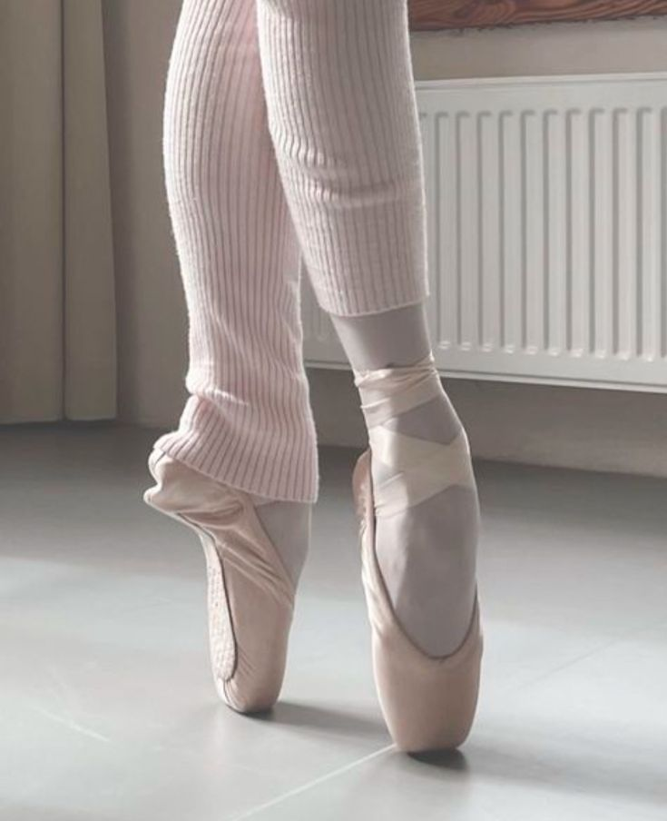
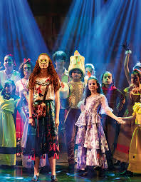
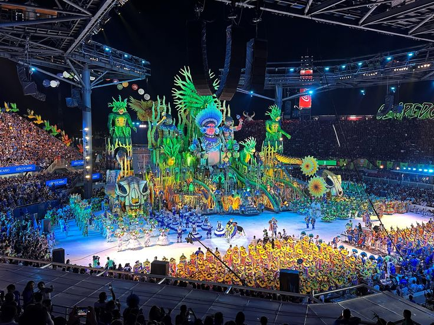
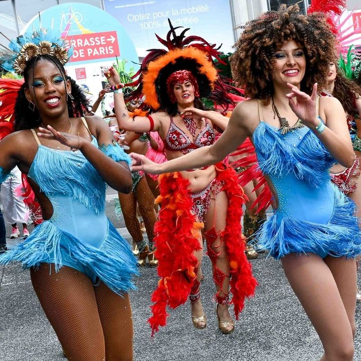
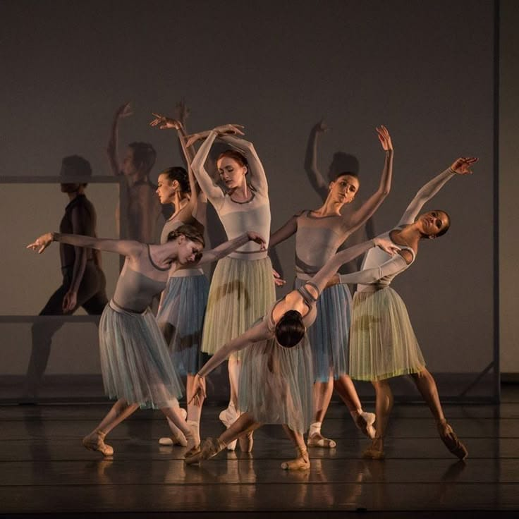

Ballet
Uma das expressões mais clássicas da dança, marcada por técnica, disciplina e forte tradição histórica nos palcos.
movimento • palco • tradição
Movimentos, gestos e tradições que transformam o corpo em linguagem cultural.
A dança é uma forma de produção cultural porque comunica histórias, valores e identidades por meio do corpo. Ela aparece em espetáculos, festas populares, religiosidades, escolas de arte e em manifestações que atravessam gerações.
A dança atravessa palcos, festas, rituais e cenas urbanas. Em cada contexto, o corpo torna-se um instrumento de comunicação, memória e pertencimento coletivo.

Uma das expressões mais clássicas da dança, marcada por técnica, disciplina e forte tradição histórica nos palcos.

Une canto, atuação e movimento, criando espetáculos que transformam a dança em narrativa performática.

O movimento, a cor e a celebração popular mostram como dança e festa podem formar um grande arquivo de cultura brasileira.

Ritmo fundamental da cultura brasileira, ligado à festa, à coletividade e à construção de identidade nacional.

Explora liberdade de movimento, experimentação e leitura crítica do corpo em relação ao mundo ao redor.
A dança guarda tradições, reinventa estilos e conecta públicos de diferentes contextos. Ao dançar, o corpo participa da construção de um patrimônio cultural vivo.